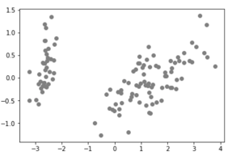
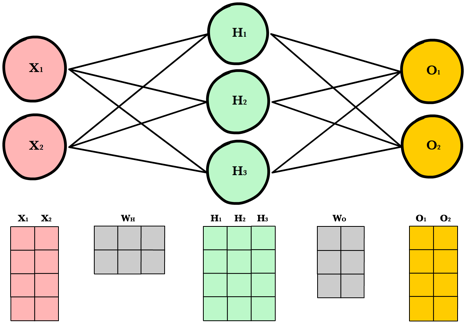

4: Machine Learning#
What is Machine Learning?#
Machine learning is a domain within artificial intelligence (AI) that provides systems with an ability to learn from experience of data observations without being explicitly programmed. What this means is that we do not need to explicitly program the rules that may help us to differentiate between categories within our data, instead we determine how the data will be presented (i.e., what are the features of the data), and we allow the machine to determine a way of organising this information. Machine learning focuses on the development of computer programs that can access data and use it learn for themselves. We can essentially think of three components: an input (the data), a function, and an output. The machine is trying to learn the function that can map inputs to some form of output, which is achieved by minimising some error measure (sometimes described as maximising a fitness function). One possible approach is to consider the difference between the expected output and the predicted output as the error measure.
A decision model that is not explicitly programmed, but instead is learnt through the training of example data.

Supervised Learning: This is where we have a set of data observations, and we provide labels about each of these observations to inform the machine what the data essentially represents. For example, if we have a set of images that we wish to classify into groups, we can state that the output is what the image depicts (for example, is it a cat or a dog?). The input to the system is the raw image data assessed based on the colour pixel intensity values. The output of the system is a label of either ‘cat’ or ‘dog’. The function that converts pixel data to a label is what the machine attempts to learn. This is often described as classification since we are classifying the data into a series of groups. This exact same concept can be extended to many other applications, such as classifying malicious and benign software, or malware families, or even classifying types of users of a system.
Unsupervised Learning: This is where data is provided much like before however no training labels are given. Leading from our earlier example then, we may have image data of cats and dogs, however we do not have each image labelled as such. Here, the system attempts to learn a suitable way of clustering the data, under some mathematically assumptions. As an example, this could be distance-based, where it may be assumed that observations of the same type may appear close together in feature space. A scatter plot could then be used to explore the learnt separation of the data, to assess whether the groupings of the data make sense from some intuitive perspective. This can be a really powerful technique for dealing with a large volume of data fairly quickly, where labelling each data observation is not an option due to time constraints. Furthermore, some approaches may combine unsupervised learning as an initial data processing stage, to then support more efficient labelling to inform a supervised process.
Other forms of learning also exist, such as semi-supervised (where the system may only be informed on a subset of samples, as identified through some means which could be unsupervised), active learning (which involves a human-in-the-loop to label a small subset of data based on some underlying data attributes), and reinforcement learning (which is learning based on trial-and-error, popular for learning to play video games or robotic navigation).
Important to discuss also is the notion of training and testing. Typically, we develop a machine learning classifier based on training data. This is data that is representative of the problem domain that we are addressing, and our system may observe this data many times as part of adjusting the function that is calculated to map inputs to outputs correctly. Once we have completed sufficient iterations of this, such that the accuracy of mapping inputs to outputs on the training data is relatively high (ie., a high accuracy score is achieved), we would then test the model using a test dataset, that contains samples that were not in the training data, but are drawn form the same distribution. If we can achieve a high accuracy using the testing data also, then our model can be considered to be generalisable. Where the model performs high for training data but low for testing data, this can be described as overfitting our model to the training data. This is an important concept to grasp as the purpose of machine learning is to develop a system that can generalise to new data observations, and predict outputs on these, based on historical data patterns.
Search Optimisation#
Earlier we introduced the concept of minimising some error measure, or error function. We can think about this as trying to find some minimum point on a curve – the challenge is that we do not know the minimum point ahead of time. Suppose we are at the yellow point on the curve, and we can look either one place left or right. By stepping along we can find the minimum point on the curve, however the notion of step size is important to realise. Too small a step size would mean that the time taken is too large. Too large a step size would mean that we overstep our intended solution. Furthermore, in most challenges the curve may not be a simple as a standard U-shape. Imagine a rock face, where there are ridges and nooks along the surface. We can think of these as local minima, where the point either side is greater - and so therefore have we found the mimimum point? The true mimimum is often described as the global minimum. Search optimisation aims to find the global minimum solution, in a way that can traverse this space efficiently, and can overcome local minima that may conceal the correct solution.

Methods of Learning#
Linear Regression: Widely used in statistics, linear regression is an approach for modelling the relationship between a dependent variable and one or more explanatory, or independent, variables. This essentially gives a continuous value prediction of some outcome, based on a set of numerical inputs. For example, imagine I want to predict house prices in my local area. If I know number of bedrooms and listed price, I can develop a mathematical model to express this, where number of bedrooms is the input, and price is the output. For any number of bedrooms within my distribution, I can then predict the output price. Of course, the model may be wrong, and would likely require more attributes, such as garden size, access to schooling, whether there is a driveway, and many other factors. We see here how multiple inputs variables will inform a single output value. I could model whether a network packet is malicious or benign in a similar fashion, where multiple inputs inform a single numerical output. The important thing to note here, is that this will only model a linear relationship – i.e., there is strong linear correlation between the inputs and the output, and so this is often too simplistic for many real-world challenges, but does at least provide a useful starting point. Linear regression can be expressed in the form: y = mx + c, where m is the gradient of the line, and c is the y-intercept of the line. We can calculate the Mean Squared Error (MSE) to measure how closely the data fits the line, where the smaller this value is, the closer the fit.

Clustering: Here we want to observe when different observations form groupings of similar behaviour. We have discussed earlier the idea of clustering malware as malicious or benign. Similarly, we may have some data that is unlabelled, and we want to assign some labels to this. A popular method for this is known as k-means clustering, which will aim to identify k unique clusters within a given dataset, where data points are grouped together based on their collective mean values. Essentially, we begin with k randomised points, and for each point within our data, we determine which of our k points the data is closest to, so that we can assign a label. Once we have assigned a label to all data points, we update our k points so that each k point is the centroid of the group – which essentially is the mean in both the x and y axis, assuming we are dealing with 2 attributes in our data. We continue this process until we find a solution where the k points no longer change, and therefore our solution has stablised. We could essentially say we have minimised the error (the distance required to update the values). The practical session will delve into clustering further.


Support Vector Machines: Similar to how we have described our clustering approach above, SVM works through iterative search to find an optimal solution. Likewise, just as linear regresssion provides a line-of-best-fit through the data, SVM aims to fit a line that provides a decision boundary so that data points can be classified. Specifically, we measure the euclidean distances between data points nearest to the decision boundary. The objective is to maximise the distance between points and the decision bounary. The euclidean distance essentially measures the distance as a diagonal distance (think about the long side of a triangle, and how you would calculate this distance using Pythagorean Therorem). We can use the same formula as described earlier for linear regression, y = mx + c, to characterise the decision boundary line.
Dimensionality Reduction: Earlier we commented that our search optimisation may be in some higher dimensional space. We often use 2D or 3D visualisations to convey them simply because we can not easily observe dimensionlity higher than this. Yet, some dataset that has 100 different numerical attributes about each data instances could be considered to be a high dimensional dataset (100-dimensional). Is there a meaningful way that we can visualise this data to identify data instances that mayshare similarities, or at least may make it easier to summarise the key characteristics of the data instance. Dimensional reduction aims to achieve this, such that we can preserve the structure of the data in a low dimensional space that can be easier understood and visualised.
Principal Component Analysis (PCA) is a widely used method of dimensionality reduction. For a given dataset, it essentially seeks to find the direction (or vector) of greatest variance through the data. Suppose we have some points in 2-dimensions. We can fit a line through this data, much like we have seen already. Then, we could treat this line as a new “axis” for our data, and essentially map our points against where they occur on this line. We could also imagine a similar approach if we wanted to map 3-dimensional points to 2-dimensions, by finding a plane that all points could be mapped on to (where we say plane, imagine this as a flat piece of paper being held at some orientation within our 3-dimensional points, and then placing a dot on our page where each point occurs). Other methods of dimensionality reduction include t-distributed stochastic neighbourhood embedding (t-SNE), and uniform manifold and projection (UMAP). Dimensionality reduction is useful as part of unsupervised learning, where we want to cluster data but have no training labels to inform our process.
Neural Networks: Probably the most commonly described form of machine learning in use today is the neural network. The name derives from the notion of synapses in the brain firing when they receive a signal, where many signals contribute towards whether a synapse should fire or not. Here, we have an input layer (red) which takes in some attributes about our data - for example, a set of numerical features that have been derived. For classification, the output layer would relate to the possible output classes of the data, where the highest scoring node would be the predicted class. In between are a set of hidden nodes that the machine will attempt to learn a suitable numerical value for, such that input nodes map to the expected output nodes. We do this using matrix multiplication. We will show this further in the practical session. The important detail to know is that neural networks are calculated as y = sigmoid (Wx + b), where x is my input vector (e.g., 5 numerical values in a 5-by-1 column), W is a weights matrix (where the matrix has the same number of columns as the number of rows in our input vector), and b is a bias vector that is added as a constant. The sigmoid function then scales our resulting vector so that our values remain within our set bounds (either -1 and +1, or 0 and 1). What we have described is often considered as a feed-forward network. Since our model is likely to incorrectly predict our data initially, we need a method for updating the weight values in our hidden nodes, since these essentially dictate how our input relates to our output. This is done using a technique called backpropagation. This essentially works like the search optimisation technique described earlier, where we seek to minimise the distance between the predicted values and our expected values, which is achieved through the process of training the neural network.

For our purpose here, we want to understand what different techniques exist for machine learning. Here we are not going to focus too much on the underlying mathematics used, although it is important to understand how these methods operate and why. Neural networks have formed the basis of much modern machine learning research. The concept of Deep Learning comes from having many hidden node layers in a neural network structure, such that it is a deep neural network. Furthermore, there now exist a wealth of different architectures based upon the notion of deep learning. Convolutional Neural Networks have become particularly popular for image analysis tasks. This is because instead of having single vector inputs, they use square regions as input, which means they are much better at preserving spatial attributes such as the relationship between pixels in an image. The final method to mention here is Recurrent Neural Networks, which are designed to work on sequential forms of data. Whereas our previous learning models have treated each data instances as a discrete observation, in a recurrent model, each instance of data is dependent on what came before. A common example is language modelling – so similar to subsequence anomalies discussed in Section 3, our model could learn that the input phrase “The quick brown fox jumps over the lazy” is completed by the word “dog”.
We have covered a lot of ground in this section, but hopefully this helps to give you a brief introduction to the diferent machine learning models that are used. In particular, we have seen how each model takes an input, performs some processing or operation, and provides an output. We have also seen how this is based on minimising or maximising some function over time through the process of training to achieve the final output. It is important to think about the task to be solved as to which method is most appropriate – are we hoping to predict a class (classification), a continuous value (regression), a group (clustering), or some complex non-linear function (neural network)?
As a slightly aside, when using machine learning for the purpose of cyber security, it is vital that we consider the case where an adversary is able to manipulate the performance of our model. You may have seen examples of this, where image recognition systems can be made to misclassify objects, despite a well-trained model being used. Think about the impact here for up-and-coming domains such as autonomous vehicles and healthcare. This is why when we think about AI for cyber security it is fundamental that we also think about the cyber security of AI. We are merely scratching the surface here, however there is much research activity in the area of adversarial learning.
We have covered a lot in this section, and it is worth taking the time to reflect on the different techniques used in machine learning for cyber security. The practical sessions that accompany this chapter will show you how the implement clustering, linear regression, and neural networks, using Python and the Jupyter Notebook environment, to give you a feel for how the inner workings of these concepts perform. This will also help develop your understanding when using off-the-shelf libraries such as scikit-learn, to understand how the algorithms scale up and perform on larger datasets.